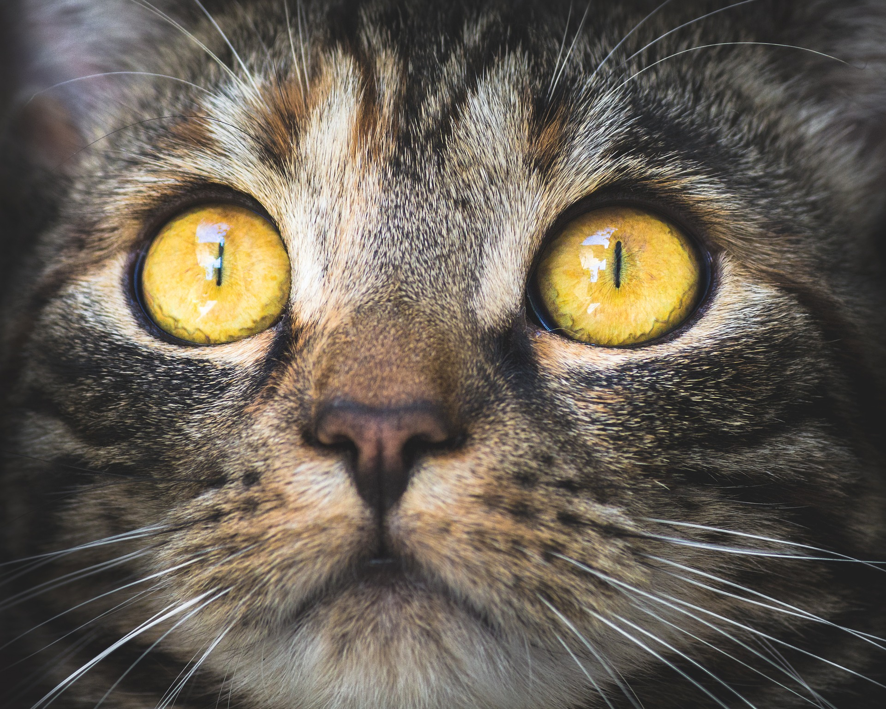

고양이
애완용으로 기르며 쥐를 잡는 실용적인 동물이다.
고양이를 뜻하는 ‘묘(猫)’자는 묘(貓)에서 기원되었다.
수코양이를 낭묘(郎猫), 암코양이를 여묘(女猫), 바둑무늬의 얼룩고양이를 화묘(花猫),
검은고양이를 표화묘(豹花猫) 등으로 미화하여 부르기도 한다.
Origin
기원은 약 5,000년 전 아프리카 리비아지방의 야생고양이가 고대 이집트인에 의하여 순화, 사육되어 점차 세계 각지로 퍼졌다고 하며,
우리나라에는 대체로 10세기 이전에 중국과 내왕하는 과정에서 들어온 것으로 추측된다.
Characteristic
몸길이 47∼51㎝, 꼬리길이 22∼38㎝, 몸무게는 2~8.5kg로 다양하다.
앞발에 다섯 개의 발가락, 뒷발에는 네 개의 발가락이 있고, 각 발가락 끝에는 날카로운 발톱을 가지고 있다.
앞·뒷발의 발바닥에는 말랑말랑한 살주머니가 있고 털이 덮여 있어서 소리를 내지 않고 걸을 수 있고 발톱도 감출 수 있다.
뒷발이 비교적 길어서 뛸 수 있는 힘이 강하다.
시각이 발달하여 밤에 활동하기에 편리하며, 졸고 있는 것처럼 보일 때도 눈에 들어오는 물체의 상을 재빨리 식별할 수 있다.
얼굴·입 주위·턱 밑·윗입술·눈 위·뺨 등에 있는 긴 털은 촉각이 예민하여 쥐 등을 잡는 데 편리하다.
후각이 발달되어 있고, 혀의 끝 부분에는 뒤로 젖혀져 있는 예리한 가시모양의 돌기가 있어서 뼈에 붙어 있는 고기를 핥기에 알맞다.
그리고 고기를 물어 찢기 위한 날카로운 이빨과 아래턱을 당겨주는 근육 등은 육식에 적합하도록 발달되어 있다.
Life
집단생활을 하지 않으며, 돌아다니면서 먹이를 구하는 습성이 있고, 쥐 등을 잡았을 때 즉시 먹지 않고 오랫동안 놀리면서 즐기는 잔인성이 있다.
헤엄을 칠 수는 있으나 대체로 물에 들어가는 것을 싫어한다.임신기간은 약 65일 정도이며, 한배에 4∼6마리의 새끼를 낳는다.
수명은 20년 정도로서 애완동물 가운데 가장 길다. 애완용 이외에 쥐잡이를 목적으로 기른다.
특히, 페스트와 같이 쥐를 중간매개체로 하는 전염병이 유행할 때나 누에를 치는 지방에서 많은 혜택을 받는다.
[출처: 한국민족문화대백과사전(고양이)]
Gallery


- 